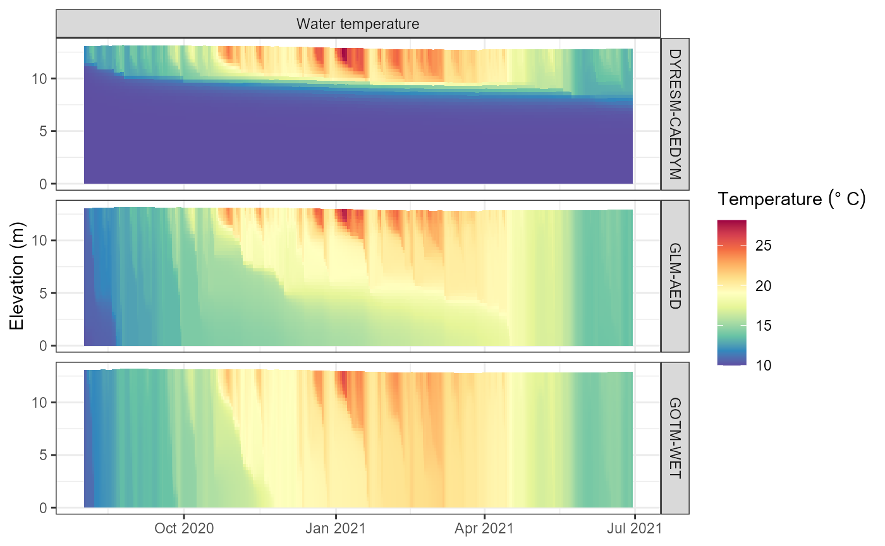

Set up AEME for a new lake
setup-new-lake.RmdSetting up the Aquatic Ecosystem Model Ensemble is straight forward and can be done in a few steps. This vignette will guide you through the process of setting up the model for a lake in New Zealand.
library(AEME)
#>
#> Attaching package: 'AEME'
#> The following object is masked from 'package:stats':
#>
#> time
library(sf) # For spatial data
#> Linking to GEOS 3.12.2, GDAL 3.9.3, PROJ 9.4.1; sf_use_s2() is TRUE
library(tmap) # For mapping
tmap_mode("view") # Set tmap mode to interactive view model
#> ℹ tmap mode set to "view".
tmap_options(basemap.server = "OpenStreetMap") # Set the basemap to OpenStreetMapLake data
The first step is to define the lake data. This includes the location of the lake, the depth and area of the lake, and the elevation of the lake.
# Define the location of the lake
lat <- -36.8898
lon <- 174.46898
# View the location of the lake in a map
coords <- data.frame(lat = lat, lon = lon) |>
st_as_sf(coords = c("lon", "lat"), crs = 4326)
tm_shape(coords) +
tm_bubbles() +
tm_view(set_view = c(lon, lat, 16))Get lake shapefile
If you have a shapefile for the lake, you can use the sf
package to read it in. However, if you do not have a shapefile you can
download most lake shapefiles from OpenStreetMap using the osmdata
package.
library(osmdata)
#> Data (c) OpenStreetMap contributors, ODbL 1.0. https://www.openstreetmap.org/copyright
# Get lake shapefile
osm_data <- opq(bbox = "New Zealand") |>
add_osm_feature(key = "name", value = "Lake Wainamu") |>
osmdata_sf()
# Extract lake polygon
lake <- osm_data$osm_multipolygons |>
st_make_valid()
lake
#> Simple feature collection with 1 feature and 8 fields
#> Geometry type: POLYGON
#> Dimension: XY
#> Bounding box: xmin: 174.4645 ymin: -36.89192 xmax: 174.4756 ymax: -36.88651
#> Geodetic CRS: WGS 84
#> osm_id name name:mi natural ref:linz:place_id type
#> 16007084 16007084 Lake Wainamu Wainamu water 26277 multipolygon
#> wikidata wikipedia geometry
#> 16007084 Q85173632 en:Lake Wainamu POLYGON ((174.4665 -36.8869...Visualise the lake shapefile on a map.
# View the lake shapefile
tm_shape(lake) +
tm_borders(lwd = 2) As you can see it matches the location of the lake we defined earlier and that it perfectly matches the outline from the OpenStreetMap polygon.
Depth and area data
The depth and area of the lake are required for the model. These can be obtained from a variety of sources. For this example, we will use the known depth of the lake (13.07 m), however for the area we will calculate this from the shapefile.
# Set depth & area
depth <- 13.07 # Depth of the lake in metres
# Calculate the area of the lake in m2
area <- st_area(lake) |>
units::set_units("m^2") |>
as.numeric()
area
#> [1] 156875.6Elevation data
Elevation data can be acquired for New Zealand from the digital
elevation model hosted on the LINZ Data Service. There is a wrapper
function for this in the aemetools package. This requires
an API key from LINZ.
You can easily create a key on the LINZ website: https://data.linz.govt.nz/ or use the function within
the aemetools package to create one.
aemetools::create_linz_key()Then adding it to your .Renviron file.
# Add the LINZ API key to your .Renviron file
aemetools::add_linz_key(key = "your_key_here")The get_dem_value function will return the elevation of
the lake in metres above sea level.
# Get the elevation of the lake
key <- Sys.getenv("LINZ_KEY")
elevation <- aemetools::get_dem_value(lat = lat, lon = lon, key = key)
elevation # in metres above sea level
#> [1] 29
elevation
#> [1] 29We will now create a list of the lake data. This will be used to construct the AEME object.
# Define lake list
lake = list(
name = "Wainamu",
id = 45819,
latitude = lat,
longitude = lon,
elevation = elevation,
depth = depth,
area = area
)Time data
The time data is required for the model. This includes the start and stop times for the model run.
# Define start and stop times
start <- "2020-08-01 00:00:00"
stop <- "2021-06-30 00:00:00"
time <- list(
start = start,
stop = stop
)Input data
Meteorological data
Download ERA5 data
We will use the aemetools package to download the ERA5
meteorological data for the location of our lake. This only works for
locations in New Zealand.
# Get ERA5 meteorological data
met <- aemetools::get_era5_point(lat = lat, lon = lon, years = 2020:2021)View the summary of the meteorological data. The units have been converted to more common units used in aquatic ecosystem modelling.
# Summary of meteorological data
summary(met)
#> Date MET_tmpair MET_tmpdew MET_wnduvu
#> Min. :2020-01-01 Min. : 9.137 Min. : 3.094 Min. :-10.826
#> 1st Qu.:2020-07-01 1st Qu.:13.406 1st Qu.: 9.326 1st Qu.: -2.087
#> Median :2020-12-31 Median :15.801 Median :11.932 Median : 1.425
#> Mean :2020-12-31 Mean :15.868 Mean :11.835 Mean : 1.128
#> 3rd Qu.:2021-07-01 3rd Qu.:18.327 3rd Qu.:14.488 3rd Qu.: 4.256
#> Max. :2021-12-31 Max. :21.985 Max. :19.221 Max. : 10.963
#> MET_wnduvv MET_pprain MET_ppsnow MET_prsttn
#> Min. :-10.1534 Min. : 0.0000 Min. :0.000e+00 Min. : 98312
#> 1st Qu.: -2.2161 1st Qu.: 0.1230 1st Qu.:0.000e+00 1st Qu.:100537
#> Median : 0.8029 Median : 0.9502 Median :0.000e+00 Median :101066
#> Mean : 0.5009 Mean : 4.2050 Mean :4.553e-16 Mean :101004
#> 3rd Qu.: 3.4222 3rd Qu.: 4.7504 3rd Qu.:2.168e-16 3rd Qu.:101481
#> Max. : 9.2317 Max. :51.6713 Max. :3.470e-15 Max. :102963
#> MET_radswd
#> Min. : 13.58
#> 1st Qu.:110.94
#> Median :173.46
#> Mean :187.14
#> 3rd Qu.:262.12
#> Max. :530.52The depth of this lake is 13.07 m, the area is 152343 m2, and the light extinction coefficient (Kw) is 1.31 m-1.
# Set Kw
Kw <- 1.31 # Light extinction coefficient in m-1Hypsograph data
If you have hypsograph data for the lake, you can use it as input for the model. This is a critical input for the model, as it defines the relationship between the lake area and the lake elevation.
However, if you do not have hypsograph data, the model will use a simple cone-shaped hypsograph based on the lake depth and area. This is not ideal, but it will work for this example.
Required column names for the hypsograph data are area,
elev, and depth.
# Generate a simple hypsograph
hypsograph_simple <- data.frame(area = c(area, 0),
elev = c(elevation, elevation - depth),
depth = c(0, -depth))
hypsograph_simple
#> area elev depth
#> 1 156875.6 29.00 0.00
#> 2 0.0 15.93 -13.07
# Plot the hypsograph
library(ggplot2)
ggplot(hypsograph_simple, aes(x = area, y = elev)) +
geom_line() +
geom_point() +
xlab("Area (m2)") +
ylab("Elevation (m)") +
theme_bw()As you can see, the hypsograph is a simple cone shape. Ideally, you would have more detailed hypsograph data for your lake.
If you have information regarding the maximum depth of the lake, the
surface area and an estimate of volume development, you can generate a
hypsograph using the generate_hypsograph function. The
volume_development parameter is a scaling factor for the
volume development of the lake. Values below 1.5 are lakes with a
concave hypsograph, values above 1.5 are lakes with a convex hypsograph,
and values of 1.5 are lakes with a linear hypsograph.
For Wainamu Lake, we will use a volume development of 1.62 which was calculated from a bathymetry survey of the lake. You can view this on the LERNZmp platform.
# Generate a hypsograph
hypsograph <- generate_hypsograph(max_depth = depth, surface_area = area,
volume_development = 0.5, elev = elevation,
ext_elev = 1)
ggplot(hypsograph, aes(x = area, y = elev)) +
geom_line() +
geom_point() +
geom_line(data = hypsograph_simple, aes(x = area, y = elev),
linetype = "dashed") +
xlab("Area (m2)") +
ylab("Elevation (m)") +
theme_bw()
# Define input list
input = list(
init_depth = depth,
hypsograph = hypsograph,
meteo = met,
use_lw = TRUE,
Kw = Kw
)Construct the AEME object
The aeme_constructor function will take the input data
and construct the AEME object. The minimum inputs are the
lake, time, and input data.
# Construct AEME object
aeme <- aeme_constructor(lake = lake,
time = time,
input = input)
#> Time step missing. Setting time step to 3600 seconds.
#> Spin up for models missing. Setting spin up to 2 for all models.View AEME object
The AEME object can be inspected by printing it to the console. This will show the inputs that have been use to construct the object along with default values for inputs not provided.
aeme
#> AEME
#> -------------------------------------------------------------------
#> Lake
#> Wainamu (ID: 45819); Lat: -36.89; Lon: 174.47; Elev: 29m; Depth: 13.07m;
#> Area: 156875.6 m2
#> -------------------------------------------------------------------
#> Time
#> Start: 2020-08-01; Stop: 2021-06-30; Time step: 3600
#> Spin up (days): GLM: 2; GOTM: 2; DYRESM: 2
#> -------------------------------------------------------------------
#> Configuration
#> Model controls: Absent
#> Physical | Biogeochemical
#> DY-CD : Absent | Absent
#> GLM-AED : Absent | Absent
#> GOTM-WET : Absent | Absent
#> -------------------------------------------------------------------
#> Observations
#> Lake: Absent; Level: Absent
#> -------------------------------------------------------------------
#> Input
#> Inital profile: Absent; Inital depth: 13.07m; Hypsograph: Present (n=44);
#> Meteo: Present; Use longwave: TRUE; Kw: 1.31
#> -------------------------------------------------------------------
#> Inflows
#> Data: Absent; Scaling factors: DY-CD: 1; GLM-AED: 1; GOTM-WET: 1
#> -------------------------------------------------------------------
#> Outflows
#> Data: Absent; Scaling factors: DY-CD: 1; GLM-AED: 1; GOTM-WET: 1
#> -------------------------------------------------------------------
#> Water balance
#> Method: 2; Use: obs; Modelled: Absent; Water balance: Absent
#> -------------------------------------------------------------------
#> Parameters:
#> Number of parameters: 0
#> -------------------------------------------------------------------
#> Output:
#> Number of ensembles: 0
#> DY-CD:
#> GLM-AED:
#> GOTM-WET:In the configuration section of the output, under “Physical” and “Biogeochemical” for each model are labelle “Absent”. This is because the model configurations have not been built. This is done in the next step.
Building the AEME ensemble
Model controls
The model controls are the settings for the AEME ensemble. These are
read in from a CSV file. The default CSV file is stored within the
package and can be accessed using the get_model_controls
function. It has the argument use_bgc which is a logical
value to indicate whether to simulate the default biogeochemical
variables with the hydrodynamic variables or just the hydrodynamic
variables.
The model controls has the following columns:
-
var_aeme: The variable name in the AEME object -
simulate: Whether to simulate the variable -
inf_default: The default inflow value -
initial_wc: The initial water column value -
initial_sed: The initial sediment value
# Get model controls
model_controls <- get_model_controls()
model_controls
#> var_aeme simulate inf_default initial_wc initial_sed conversion_aed
#> 1 HYD_flow FALSE NA NA NA 1.00000000
#> 2 HYD_temp TRUE 15.00 11.000 NA 1.00000000
#> 3 HYD_dens FALSE NA NA NA 1.00000000
#> 4 RAD_par FALSE NA NA NA 1.00000000
#> 5 RAD_extc FALSE NA NA NA 1.00000000
#> 6 RAD_secchi FALSE NA NA NA 1.00000000
#> 7 CHM_salt TRUE 0.00 0.000 0e+00 1.00000000
#> 8 CHM_oxy TRUE 10.00 10.000 1e+01 0.03200000
#> 9 PHS_frp FALSE 0.00 0.010 1e+06 0.03097376
#> 10 PHS_dop FALSE 0.00 0.010 1e+06 0.03097376
#> 11 PHS_dopr FALSE 0.00 NA NA 0.03097376
#> 12 PHS_pop FALSE 0.00 0.010 1e-04 0.03097376
#> 13 PHS_popr FALSE 0.00 NA NA 0.03097376
#> 14 PHS_pip FALSE 0.00 0.002 5e-03 0.03097376
#> 15 PHS_tp FALSE NA NA NA 0.03097376
#> 16 NIT_amm FALSE 0.05 0.020 1e+06 0.01400670
#> 17 NIT_nit FALSE 0.20 0.015 1e+06 0.01400670
#> 18 NIT_don FALSE 0.00 0.300 1e+06 0.01400670
#> 19 NIT_donr FALSE 0.00 NA NA 0.01400670
#> 20 NIT_pon FALSE 0.00 0.100 1e-03 0.01400670
#> 21 NIT_ponr FALSE 0.00 NA NA 0.01400670
#> 22 NIT_pin FALSE NA 0.010 1e-03 0.01400670
#> 23 NIT_tn FALSE NA NA NA 0.01400670
#> 24 CAR_dic FALSE 10.00 2.000 1e+06 0.01201100
#> 25 CAR_doc FALSE 0.00 0.500 1e+06 0.01201100
#> 26 CAR_docr FALSE 0.00 NA 1e+06 0.01201100
#> 27 CAR_poc FALSE 0.00 0.200 1e-01 0.01201100
#> 28 CAR_pocr FALSE 0.00 NA NA 0.01201100
#> 29 CAR_ph FALSE 0.00 NA NA 1.00000000
#> 30 CAR_ch4 FALSE NA NA NA 1.00000000
#> 31 SIL_rsi FALSE 0.00 1.000 1e+07 1.00000000
#> 32 BAC_bac FALSE 0.00 NA NA 1.00000000
#> 33 PHY_dinof FALSE 0.10 1.000 0e+00 1.00000000
#> 34 PHY_cyano FALSE 0.10 1.000 0e+00 1.00000000
#> 35 PHY_nodul FALSE 0.10 1.000 0e+00 1.00000000
#> 36 PHY_green FALSE 0.10 1.000 0e+00 1.00000000
#> 37 PHY_crypt FALSE 0.10 1.000 0e+00 1.00000000
#> 38 PHY_mdiat FALSE 0.10 1.000 0e+00 1.00000000
#> 39 PHY_diatom FALSE 0.10 1.000 0e+00 1.00000000
#> 40 PHY_tchla FALSE NA NA NA 1.00000000
#> 41 NCS_ss1 FALSE 5.00 3.000 3e-01 1.00000000
#> 42 NCS_ss2 FALSE 5.00 3.000 3e-01 1.00000000
#> 43 NCS_ss3 FALSE 5.00 NA NA 1.00000000
#> 44 NCS_ss4 FALSE 5.00 NA NA 1.00000000
#> 45 NCS_ss5 FALSE 5.00 NA NA 1.00000000
#> 46 NCS_ss6 FALSE 5.00 NA NA 1.00000000
#> 47 NCS_iss FALSE NA NA NA 1.00000000
#> 48 NCS_tss FALSE NA NA NA 1.00000000
#> 49 ZOO_zoo1 FALSE 0.10 1.000 0e+00 1.00000000
#> 50 ZOO_zoo2 FALSE 0.10 NA NA 1.00000000
#> 51 ZOO_zoo3 FALSE 0.10 NA NA 1.00000000
#> 52 ZOO_zoo4 FALSE 0.10 NA NA 1.00000000
#> 53 ZOO_zoo5 FALSE 0.10 NA NA 1.00000000
#> 54 FSH_fish1 FALSE 0.00 1.000 NA 1.00000000
#> 55 FSH_fish2 FALSE 0.00 NA NA 1.00000000
#> 56 FSH_fish3 FALSE 0.00 NA NA 1.00000000
#> 57 FSH_jelly FALSE 0.00 NA NA 1.00000000
#> 58 MAC_macalg1 FALSE 0.00 NA NA 1.00000000
#> 59 MAC_macalg2 FALSE 0.00 NA NA 1.00000000
#> 60 MAC_macalg3 FALSE 0.00 NA NA 1.00000000
#> 61 MAC_macalg4 FALSE 0.00 NA NA 1.00000000
#> 62 CLM_clam1 FALSE 0.00 NA NA 1.00000000
#> 63 CLM_clam2 FALSE 0.00 NA NA 1.00000000
#> 64 CLM_clam3 FALSE 0.00 NA NA 1.00000000
#> 65 TRC_col FALSE 0.00 0.000 0e+00 1.00000000Build the ensemble
The build_aeme function will take the AEME object and
the model controls and build the ensemble. The model
argument is a character vector of the models to include in the ensemble.
The models available are dy_cd, glm_aed, and
gotm_wet.
# Select models
model <- c("dy_cd", "glm_aed", "gotm_wet")
# Path for model directory
path <- "aeme"
# Build ensemble
aeme <- build_aeme(aeme = aeme, model = model, model_controls = model_controls,
use_bgc = F, path = path)
#> Building simulation for Wainamu [2025-02-14 04:46:27]
#> No water level present. Using constant water level.
#> Estimating temperature using Stefan & Preud'homme (2007)...
#> Correcting water balance using estimated outflows (method = 2).
#> Calculating lake level using lake depth and a sinisoidal function.
#> Warning in dir.create(lake_dir, showWarnings = TRUE): cannot create dir
#> 'aeme\45819_wainamu', reason 'No such file or directory'
#> Building DYRESM-CAEDYM for lake wainamu
#> Copied in DYRESM par file
#> Writing DYRESM configuration
#> Writing DYRESM control file
#> Building GLM3-AED2 model for lake wainamu
#> Copied in GLM nml file
#> Building GOTM-WET for lake wainamu
#> Copied all GOTM configuration files
print(aeme)
#> AEME
#> -------------------------------------------------------------------
#> Lake
#> Wainamu (ID: 45819); Lat: -36.89; Lon: 174.47; Elev: 29m; Depth: 13.07m;
#> Area: 156875.6 m2
#> -------------------------------------------------------------------
#> Time
#> Start: 2020-08-01; Stop: 2021-06-30; Time step: 3600
#> Spin up (days): GLM: 2; GOTM: 2; DYRESM: 2
#> -------------------------------------------------------------------
#> Configuration
#> Model controls: Present
#> Physical | Biogeochemical
#> DY-CD : Present | Present
#> GLM-AED : Present | Absent
#> GOTM-WET : Present | Present
#> -------------------------------------------------------------------
#> Observations
#> Lake: Absent; Level: Absent
#> -------------------------------------------------------------------
#> Input
#> Inital profile: Present; Inital depth: 13.07m; Hypsograph: Present (n=44);
#> Meteo: Present; Use longwave: TRUE; Kw: 1.31
#> -------------------------------------------------------------------
#> Inflows
#> Data: Absent; Scaling factors: DY-CD: 1; GLM-AED: 1; GOTM-WET: 1
#> -------------------------------------------------------------------
#> Outflows
#> Data: Present; Scaling factors: DY-CD: 1; GLM-AED: 1; GOTM-WET: 1
#> -------------------------------------------------------------------
#> Water balance
#> Method: 2; Use: obs; Modelled: Absent; Water balance: Present
#> -------------------------------------------------------------------
#> Parameters:
#> Number of parameters: 0
#> -------------------------------------------------------------------
#> Output:
#> Number of ensembles: 0
#> DY-CD:
#> GLM-AED:
#> GOTM-WET:By default, the build_aeme function will build the file
configuration for each model. This will create the necessary files for
each model to run. The files are also stored in the aeme
object in the configuration slot with a list for
hydrodynamic and ecosystem model configurations.
# View the files
cfg <- configuration(aeme)
names(cfg[["glm_aed"]])
#> [1] "hydrodynamic" "ecosystem"All of the information and data needed to run an ensemble of models
is now contained within the aeme object. This allows for
easy storage of all the data and also for easy sharing of the data with
others. Sharing the aeme object with others allows them to
run the ensemble of models without needing to reconstruct the
object.
# Run the ensemble
aeme <- run_aeme(aeme = aeme, model = model, path = path)
#> Running models... (Have you tried parallelizing?) [2025-02-14 04:46:29]
#> DYRESM-CAEDYM running... [2025-02-14 04:46:29]
#> DYRESM-CAEDYM run successful! [2025-02-14 04:46:50]
#> GLM-AED running... [2025-02-14 04:46:50]
#> GLM-AED run successful! [2025-02-14 04:46:50]
#> GOTM-WET running... [2025-02-14 04:46:50]
#> GOTM-WET run successful! [2025-02-14 04:46:51]
#> Model run complete![2025-02-14 04:46:51]
#> Retrieving and formatting dyresmTEMPTURE_Var for model dy_cd
#> Retrieving and formatting dyresmSALINITY_Var for model dy_cd
#> Retrieving and formatting temp for model glm_aed
#> Retrieving and formatting salt for model glm_aed
#> Retrieving and formatting temp for model gotm_wet
#> Retrieving and formatting salt for model gotm_wetView the output
The output from the model run is stored in the output
slot of the aeme object. This is a list with a list for
each model. The list contains the output data from the model run.
# View the output
plot_output(aeme = aeme, model = model)
#> Warning: Removed 246 rows containing missing values or values outside the scale range
#> (`geom_col()`).
Saving the AEME object
Saving the aeme object to a file can be done using the
saveRDS function. This will save the object to a file with
the .rds.
# Save the AEME object
saveRDS(aeme, "aeme.rds")